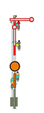

|
|
| You are now approaching the Entry Signal
of the Langeland station.
|
 Stop: Stop before the Signal and wait for a Proceed Aspect. As necessary, adjust the Braking Force(Braking Force increase, Braking Force reduction). |
 The Main Signal indicates Proceed,
the Distant Signal shows that the next Main Signal
in 1000m is displaying Proceed at Reduced Speed (40km/h)
. The Main Signal indicates Proceed,
the Distant Signal shows that the next Main Signal
in 1000m is displaying Proceed at Reduced Speed (40km/h)
. Immediately after passing the Signal, press the Indusi-Alert (Enter-Key in Numeric Keypad). The yellow 1000Hz-Light must illuminate. Make a Brake Application to reduce the speed to 40km/h. Brake Application |
 The Main Signal indicates Proceed,
the Distant Signal shows that the next Main Signal
in 1000m is displaying Stop. The Main Signal indicates Proceed,
the Distant Signal shows that the next Main Signal
in 1000m is displaying Stop. Immediately after passing the Signal, press the Indusi-Alert (Enter-Key in Numeric Keypad). The yellow 1000Hz-Light must illuminate. Make a Brake Application to reduce the speed to a stand by the next Signal. Brake Application |
 The Main Signal indicates Proceed at Reduced Speed
(40km/h), the Distant Signal shows that the next
Main Signal in 1000m is displaying Stop. The Main Signal indicates Proceed at Reduced Speed
(40km/h), the Distant Signal shows that the next
Main Signal in 1000m is displaying Stop. Immediately after passing the Signal, press the Indusi-Alert (Enter-Key in Numeric Keypad). The yellow 1000Hz-Light must illuminate. Drive until the next Main Signal with a maximum speed of 40km/h. Make a Brake Application to reduce the speed to a stand by the next Signal. Brake Application |
 The Main Signal indicates Proceed at Reduced Speed (40km/h), the Distant Signal shows that the next
Main Signal is also displaying Proceed at Reduced Speed
(40km/h). The Main Signal indicates Proceed at Reduced Speed (40km/h), the Distant Signal shows that the next
Main Signal is also displaying Proceed at Reduced Speed
(40km/h). Immediately after passing the Signal, press the Indusi-Alert (Enter-Key in Numeric Keypad). The yellow 1000Hz-Light must illuminate. Drive until the next Signal with a maximum speed of 40km/h. |
 In the Timetable Book one can
see the reduction in the Line Speed to 90km/h at km 4,7. In addition, there is
in Langeland station, a Track-Kilometre change from 3,5 to 107,6.
In the Timetable Book one can
see the reduction in the Line Speed to 90km/h at km 4,7. In addition, there is
in Langeland station, a Track-Kilometre change from 3,5 to 107,6.